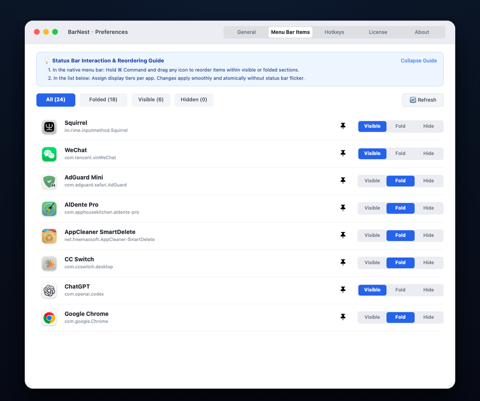

Include your macOS version, BarNest version (Preferences → About), and a brief description of the issue.
Quick Start & Visual Guide
Master BarNest in minutes with these 4 essential operations:
Step 1 · Reveal & Hide Drawer
Hover cursor or press hotkey to unfold
BarNest lives directly in your menu bar. Simply hover your cursor over the nest divider arrow (< or >) to smoothly reveal hidden icons with fluid spring physics. Moving the cursor away collapses the drawer automatically. You can also press the global hotkey ⌥⌘B at any time.
Categorize icons into Visible, Folded, and Always-Hidden
Organize apps according to your workflow into three levels: Always Visible (stays on main status bar), Auto Hide / Folded (revealed on hover), and Always Hidden (tucked away into the deep drawer). Inside the drawer, switch between [All], [Folded], and [Always Hidden], or press ⌥⇧⌘B to toggle deep visibility.

Preferences Item Management: Assign items to Visible, Fold, or Hide with instant zero-flicker updatesStep 3 · Preferences & Notch Collision Safety
Hover sensitivity, hotkeys, and screen collision safety
Right-click the menu bar divider or click the gear icon ⚙️ at the end of the drawer to open Preferences. Customize hover delays, launch at login, global shortcuts, and let BarNest automatically safeguard icons from getting lost behind MacBook camera notches.
Step 4 · Free Trial & Multi-Mac License
One-time purchase, lifetime access across all your Macs
Enjoy a full-featured 7-day free trial on first launch with zero commitment. Unlock permanent access anytime in Preferences → License. When setting up a new Mac or reinstalling, simply click Restore Purchases to reactivate instantly under your Apple ID without extra charges.
BarNest lives directly in your menu bar. Look for the nest divider icon (< or >) in your status bar. Click it to expand or collapse hidden icons, or right-click to open Settings.
Does BarNest require Accessibility or special system permissions?
No. BarNest is engineered with a strict Zero-Permission architecture. It does not require macOS Accessibility permissions, Screen Recording permissions, or any sensitive system entitlements. It works instantly out of the box in the secure macOS App Sandbox.
How does the 7-day free trial and lifetime license work?
BarNest gives you a full-featured 7-day free trial upon first launch. After 7 days, you can unlock lifetime access via a one-time In-App Purchase ($2.99 launch special, then $5.99 regular). There are no recurring subscriptions.
How do I restore my purchase on another Mac?
Open BarNest Preferences → License and click Restore Purchases while signed into the same Apple ID. Purchases are synced across all your Macs.
Fahren Sie mit der Maus über das Pfeilsymbol (< oder >) in der Menüleiste oder drücken Sie ⌥⌘B, um versteckte Symbole sanft auszuklappen.
Schwebender Drawer mit Schnellübersicht und SystemmonitorSchritt 2 · 3-Stufen-Hierarchie
Symbole individuell organisieren
Ordnen Sie Symbole in "Immer sichtbar", "Automatisch ausblenden" oder "Dauerhaft verstecken" ein.
Einstellungen: Intelligente Menüleistenverwaltung ohne Sonderberechtigungen
Häufige Fragen
Benötigt BarNest Bedienungshilfen- oder spezielle Systemberechtigungen?
Nein, absolut nicht. BarNest basiert auf einer strikten Zero-Permission-Architektur und benötigt weder Bedienungshilfen noch Bildschirmaufnahmen. Es läuft sofort sicher in der macOS Sandbox.
Wie funktioniert die 7-Tage-Testversion?
Nach 7 Tagen uneingeschränkter Testphase können Sie die Dauerlizenz per Einmalkauf freischalten (2,99 $ Aktionspreis zeitlich befristet, regulär 5,99 $).
Survolez la flèche (< ou >) ou appuyez sur ⌥⌘B pour afficher instantanément vos icônes masquées.
Tiroir flottant déplié : onglets, icônes rangées et moniteur systèmeÉtape 2 · Classement en 3 niveaux
Visible, Masqué ou Toujours masqué
Classez facilement vos applications dans les préférences sans aucune autorisation spéciale.
Préférences : organisation fluide des éléments de la barre de menus
Questions fréquentes
BarNest nécessite-t-il une autorisation d'accessibilité ou des privilèges système ?
Non, absolument pas. BarNest est conçu selon une architecture stricte zéro autorisation (Zero-Permission). Il ne requiert aucune autorisation d'accessibilité ni d'enregistrement d'écran et fonctionne immédiatement dans le bac à sable macOS.
Essai gratuit de 7 jours et achat à vie
Profitez de 7 jours d'essai sans engagement. Débloquez ensuite l'accès à vie via achat intégré unique (2,99 $ offre de lancement, 5,99 $ prix normal).
Pasa el puntero sobre la flecha (< o >) o pulsa ⌥⌘B para ver los iconos ocultos al instante.
Cajón desplegado con pestañas, iconos y monitor de recursosPaso 2 · Organización en 3 niveles
Siempre visible, Ocultación y Siempre oculto
Organiza tus aplicaciones favoritas desde Preferencias sin otorgar permisos especiales.
Preferencias: Gestión rápida y segura de iconos en el sandbox de macOS
Preguntas frecuentes
¿Requiere BarNest permisos de accesibilidad o permisos especiales del sistema?
No, en absoluto. BarNest está diseñado con una arquitectura estricta de Cero Permisos (Zero-Permission). No requiere permisos de accesibilidad ni de grabación de pantalla. Opera de inmediato dentro del sandbox seguro de macOS.
Prueba gratuita de 7 días y licencia definitiva
Incluye 7 días de prueba completa. Luego puedes desbloquear la licencia de por vida con un pago único ($2.99 oferta de lanzamiento / $5.99 precio regular).
Passe o mouse sobre a seta (< ou >) ou use ⌥⌘B para abrir instantaneamente a gaveta de ícones.
Gaveta flutuante expandida com abas e monitor de sistemaPasso 2 · Hierarquia em 3 níveis
Sempre visível, Recolhimento e Oculto
Organize suas preferências de ícones diretamente nas configurações sem conceder permissões sensíveis.
Painel de preferências: personalização rápida em sandbox nativo
Perguntas frequentes
O BarNest precisa de permissões de acessibilidade ou permissões especiais do sistema?
Não, absolutamente não. O BarNest foi desenvolvido com uma arquitetura rigorosa de Zero Permissões (Zero-Permission). Não requer permissões de acessibilidade nem de gravação de tela. Funciona imediatamente no sandbox seguro do macOS.
Período de teste de 7 dias e licença vitalícia
Experimente grátis por 7 dias. Adquira a licença vitalícia com compra única ($2,99 lançamento / $5,99 normal), sem assinaturas recorrentes.